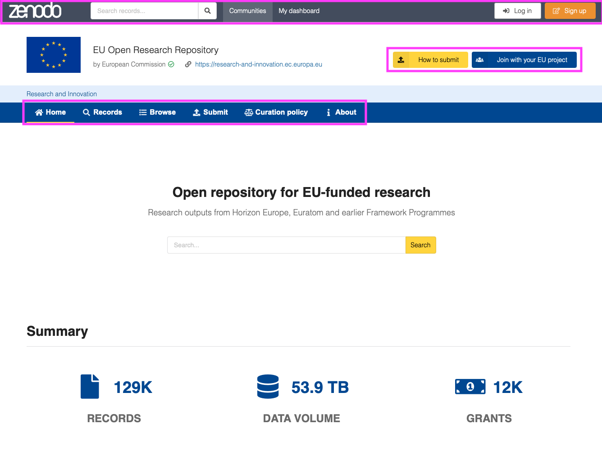
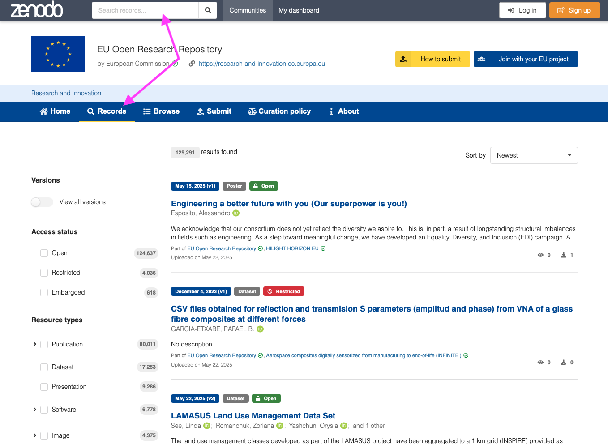
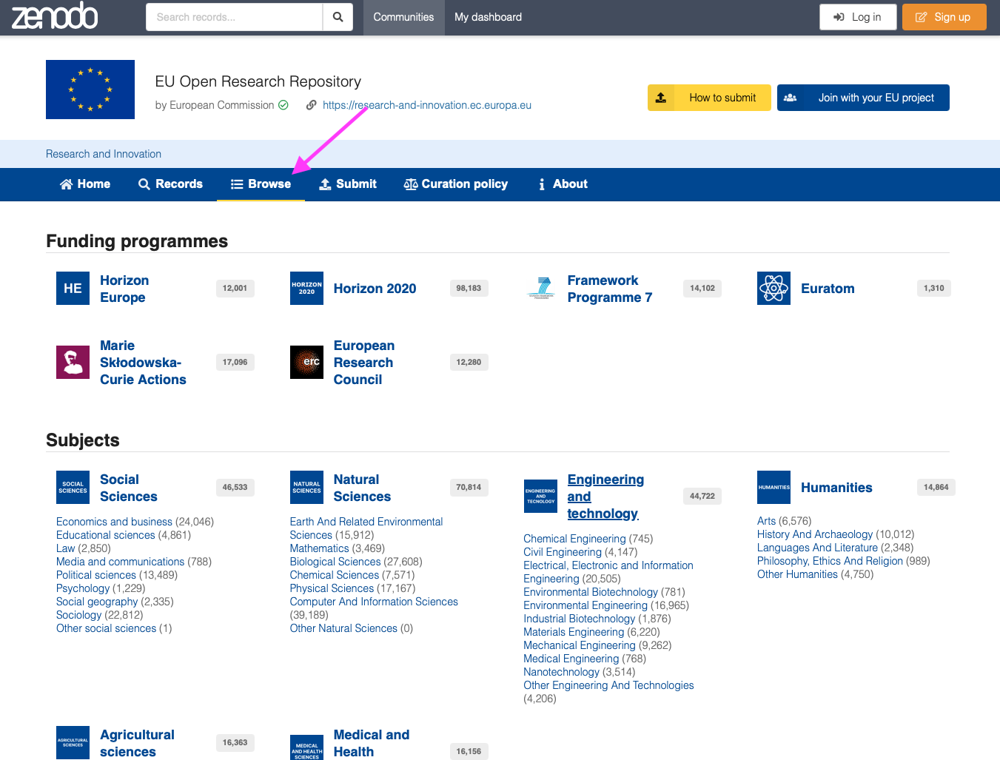
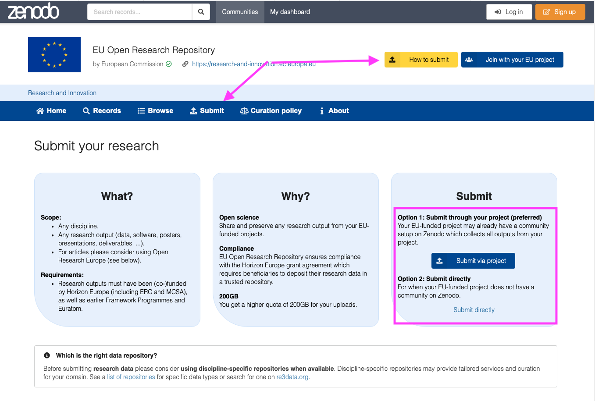
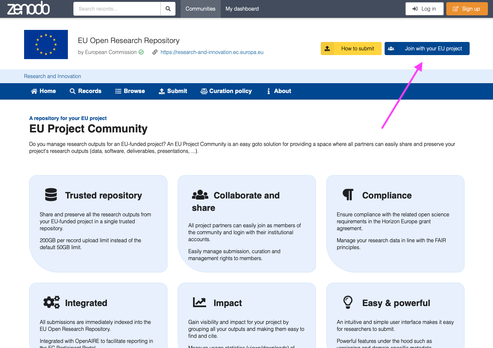
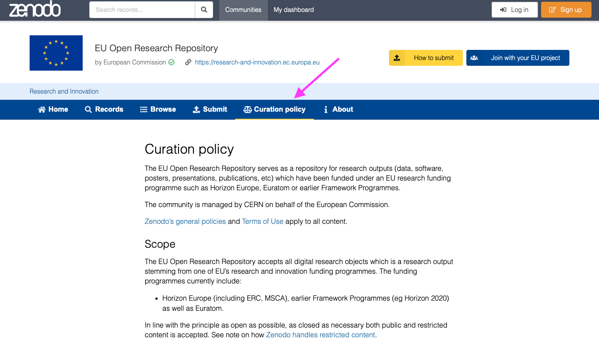
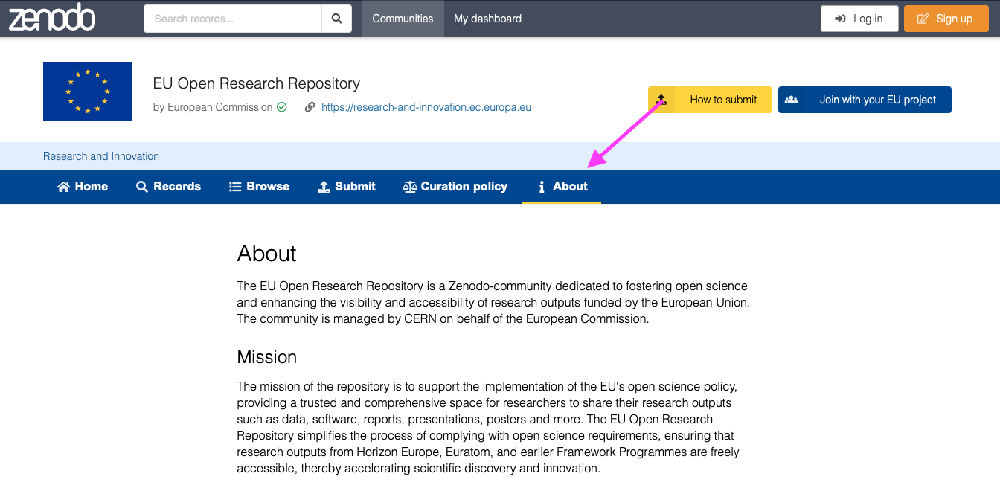
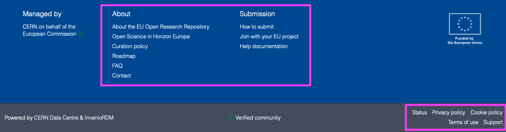

Navigating EU Open Research Repository
You access the EU Open Research Repository on the following link:
The following section gives a basic overview how to navigate EU Open Research Repository's user interface. The EU Open Research Repository features a branded community portal with the following elements:
Frontpage

The EU Open Research Repository features a small Zenodo header from where you can access Zenodo's normal features including (see navigating Zenodo for details):
- Search: Search for records in EU Open Research Repository or all of Zenodo.
- Communities: Browse and search for communities in Zenodo.
- My dashboard: The dashboard provides access your content in Zenodo - to your uploads, communities and requests.
The EU Open Research Repository in addition features a menu for accessing:
- Records/Search - searching and filtering content in the repository.
- Browse - browsing the content in the repository by funding programme, by subject or by project.
- Submit / How to submit - a detailed guidance on how to submit content.
- Join with your EU project - allows you to request an EU Project Community.
- Curation policy - the full curation policy.
- About - general information about the EU Open Research Repository
- Footer - provides access to documentation and support request form.
Records/Search
The search field is contextualised, so that if you search while browsing a EU Open Research Repository, you have the option to search only this community or all of Zenodo or one of the collections. The search field supports simple keyword style searches as well as advanced search (see the advanced search guide).

Browse
The browse menu allows you to browse content by collections. The following collections:
- Funding programme - organise the content into collections based on the funding programme. The funding programme is automatically discovered on records when they are linked to the grant.
- Subjects - organise the content into collections based on the subject programme. A record may appear in multiple subject collections. The subject is discovered from the grant or explicitly from the record.
- Projects - allows you to search and browse all EU Project Communities and filter project by participating organisation.

Submit / How to submit
The submit menu and "How to submit" button explains how to submit content to the repository and provides access to the two submission methods.

Join
The join explains about EU Project Communities and allows you to request a new EU Project Community.

Curation policy
The curation policy provides a detailed description of the criteria and requirements of what content is within scope of the repository.


About
The about page provide general information about the EU Open Research Repository

Footer
In the footer you'll find a links to documentation about EU Open Research Repository as well as our privacy policy, terms of use and not to mention the link to our support request form.
